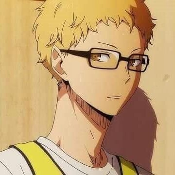

페이지 소개
등장인물
하이라이트 영상
담벼락
방문자 분석기
ㄱ. 히나타 쇼요
ㄴ. 카게야마 토비오
ㄷ. 츠키시마 케이
츠키시마 케이

고작 블로킹 한 번. 고작 25점 중에 1점. 고작, 부활동.
만화 하이큐-!!의 등장인물.
카라스노의 달이자 괴짜 속공 킬러
카라스노 고교 배구부 1학년 최장신 선수
독설가에 냉소적이며 두뇌파 타입의 손꼽히는 블로킹 실력의 소유자